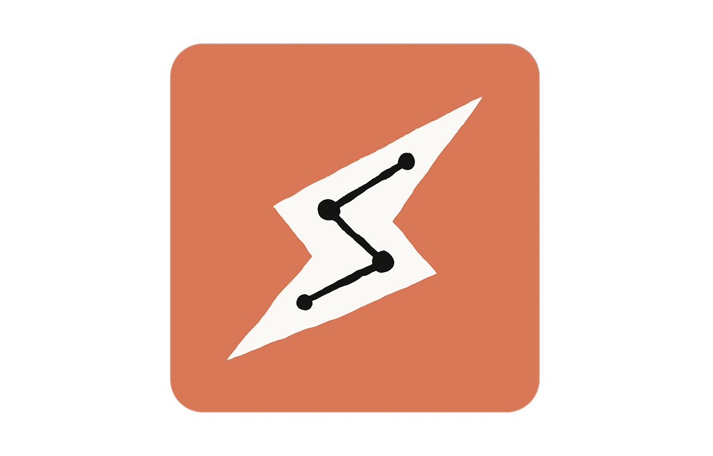

01
/
12
Term · 01
Scheduled
Tasks.
PROMPT · 1×
MON
TUE
WED
THU
FRI
SAT
SUN
···
Write once. Runs on
its own clock
.

Claude Cowork
Anthropic
if you’re a
Claude
user
Codex
OpenAI
if you’re an
OpenAI
user
One question — answered honestly
Should this
even
be on a schedule?
01
Does it need to run on a
clock?
cadence
02
Will you do something
different?
action
03
Connected — and allowed to
act?
permission
One scheduled task.
One job.
ACCURACY
HIGH
LOW
STEPS PER TASK
FEW
MANY
1 STEP
20+ STEPS
Three ways it can
go silent.
01
It never
runs at all.
02
It can’t reach the
right source.
03
The output lands where
nobody looks.
Make the AI
walk to you.
Output
Inbox
Slack
Sheet
Folder
Inside the AI app you forget to open
Mon · 07:00
Monday
Briefing.
Reads calendar, inbox, tasks. Drops a brief in your drafts.
Weekly
Recurring
Update.
Pulls fresh data, refreshes the dashboard you already open.
Every evening
Next-Day
Prep.
Tomorrow’s meetings, prior notes, attendees, follow-ups.
Weekly
Follow-up
Sweeper.
Scans CRM for 30-day silences. Drafts personal notes — never sends.
It runs
once,
in front of you. Then it earns the schedule.
01
Write the prompt
→
02
Run Now — watch it
→
03
Then schedule it
Daily · 07:00
The
Heartbeat.
Mon
Tue
Wed
Thu
Fri
Weekly review
The
Watchdog.
monday-brief
ran
next-day-prep
ran
followup-sweeper
failed
dashboard-refresh
silent
heartbeat
ran
Don’t let an old task
pretend
to be useful.
Jan
Feb
Mar
Apr
May
Jun
Jul
Aug
Sep
Oct
Nov
Dec
Once a month — ask
Is this still
earning its slot?
The system, in
five lines.
01
Pick the tool you
already use.
02
Decide what’s actually
worth scheduling.
03
Test the task
once
before you turn it loose.
04
Send the output where you
already check.
05
Audit it once a month.